Ruang bagi mahasiswa Universitas Bojonegoro untuk berkarya, berkolaborasi, serta mengembangkan kreativitas di bidang seni rupa.
Tentang KamiDANURDARA merupakan identitas Divisi Rupa UKM Kesenian Universitas Bojonegoro. Divisi ini menjadi wadah bagi mahasiswa yang memiliki minat dan bakat di bidang seni rupa untuk belajar, berkarya, berkolaborasi, serta mengembangkan kreativitas melalui berbagai kegiatan seni.
Divisi Rupa berdiri pada tanggal 3 Januari 2016 dan menjadi salah satu divisi pertama yang berada di bawah UKM Kesenian Universitas Bojonegoro. Pada awal berdirinya, Divisi Rupa masih tergabung dengan Divisi Sastra dan dikenal sebagai Divisi Rupa dan Sastra. Seiring berkembangnya organisasi, pada masa transisi generasi ke-4 menuju generasi ke-5, Divisi Sastra berpindah ke Teater sehingga Divisi Rupa berdiri sebagai divisi yang mandiri.
Nama Danurdara berasal dari bahasa Sanskerta.
Danu berarti ilmu,
pengetahuan,
kebijaksanaan,
atau anugerah pengetahuan.
Dara berarti darah,
kehidupan,
atau jiwa.
"Darah seni yang mengalir bersama pengetahuan,
menghidupkan bentuk,
menggerakkan rasa,
dan menyalakan cahaya kebijaksanaan
di setiap karya."
Makna tersebut mencerminkan bahwa seni rupa
bukan hanya tentang keindahan visual,
tetapi juga hasil dari pengetahuan,
kesadaran,
dan nilai kehidupan
yang menyatu dalam proses kreatif.
Bentuk angka 8 terinspirasi dari simbol "&" ketika Divisi Rupa masih tergabung dengan Divisi Sastra. Dalam logo DANURDARA, bentuk tersebut dimaknai sebagai lambang tak terhingga (∞) yang melambangkan keabadian, kesinambungan, dan kreativitas tanpa batas dalam seni rupa.
Kuas merupakan simbol utama seni rupa dan proses berkarya. Posisi kuas yang membelah bentuk angka 8 melambangkan ketegasan arah, fokus, semangat berkarya, serta peran seniman dalam mengubah ide menjadi karya visual yang bermakna.
Garis lengkung menggambarkan harmoni, keseimbangan, dan dinamika seni. Garis tegas dari kuas melambangkan keteguhan, pendirian, dan kejelasan arah. Keduanya menunjukkan bahwa seni lahir dari perpaduan rasa dan ketegasan.
Warna emas melambangkan inspirasi, cahaya, dan energi hangat dalam proses penciptaan. Warna biru melambangkan kedalaman, ketenangan, dan perenungan batin. Gradasi kedua warna tersebut menggambarkan perjalanan seorang seniman dari ide menuju karya nyata.
Berbagai kegiatan yang menjadi wadah bagi anggota DANURDARA untuk belajar, berkarya, berkolaborasi, serta mengembangkan kreativitas di bidang seni rupa.
Melayani pembuatan karya seni sesuai kebutuhan mahasiswa, organisasi, maupun masyarakat.
Mengembangkan kemampuan anggota melalui berbagai media dan teknik melukis.
Menampilkan proses berkarya secara langsung pada berbagai kegiatan kampus maupun umum.
Menampilkan hasil karya anggota sebagai bentuk apresiasi dan pengembangan kreativitas.
Mempelajari dan mengembangkan seni batik sebagai bagian dari pelestarian budaya Indonesia.
Membuat berbagai kerajinan kreatif dengan konsep Do It Yourself.
Merancang dekorasi, backdrop, properti, dan tata artistik untuk mendukung berbagai kegiatan dan acara.
Kumpulan dokumentasi kegiatan DANURDARA, mulai dari proses berkarya, hingga berbagai aktivitas kreatif yang telah dilaksanakan.
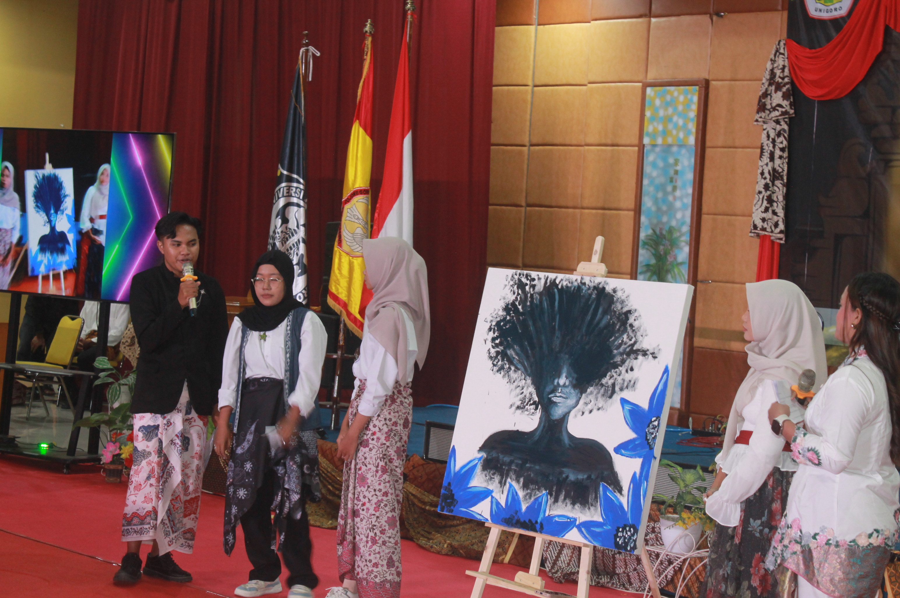
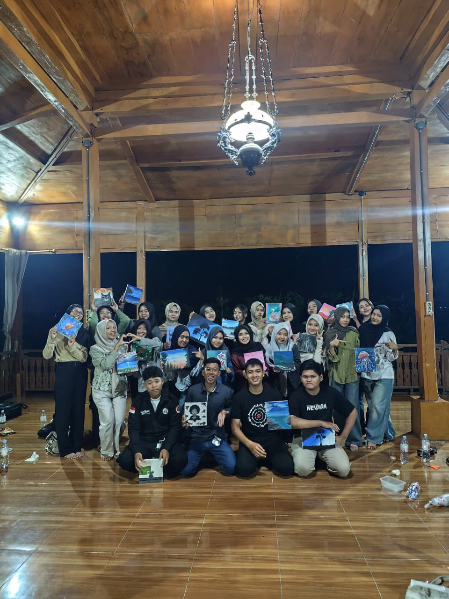
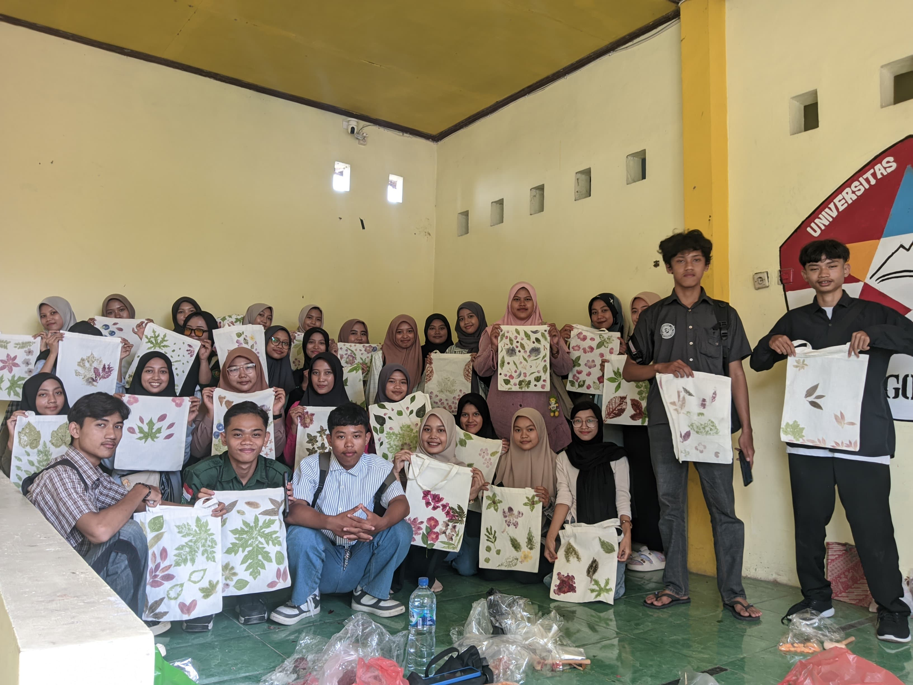
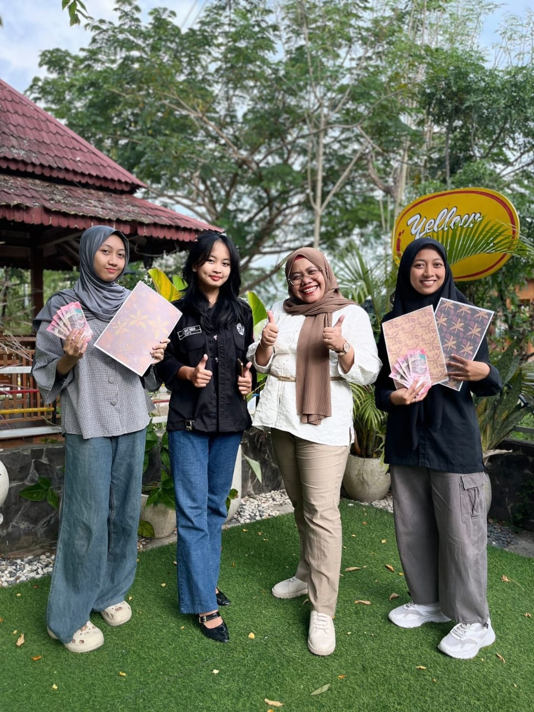
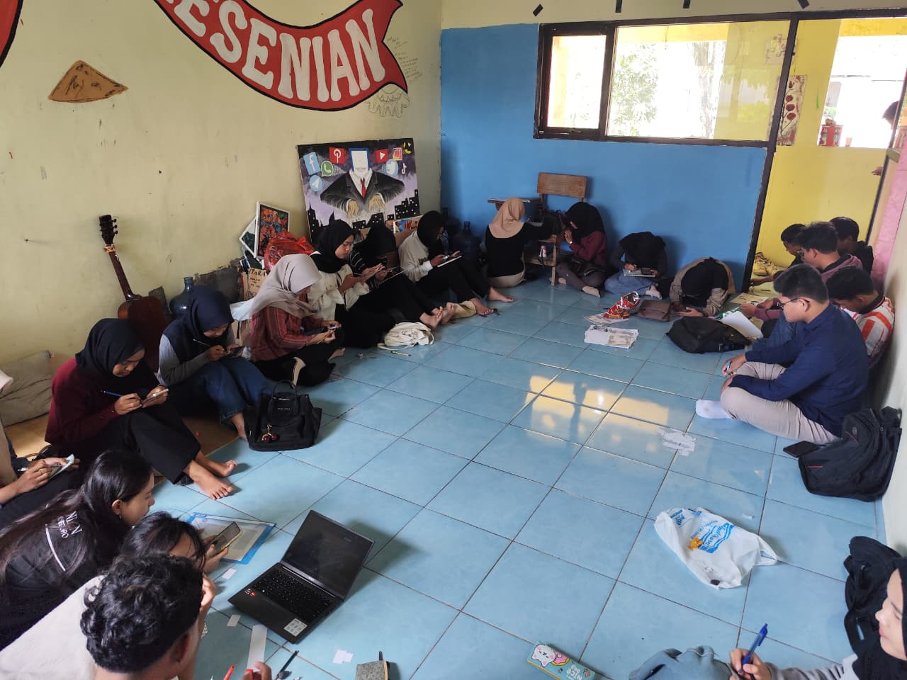
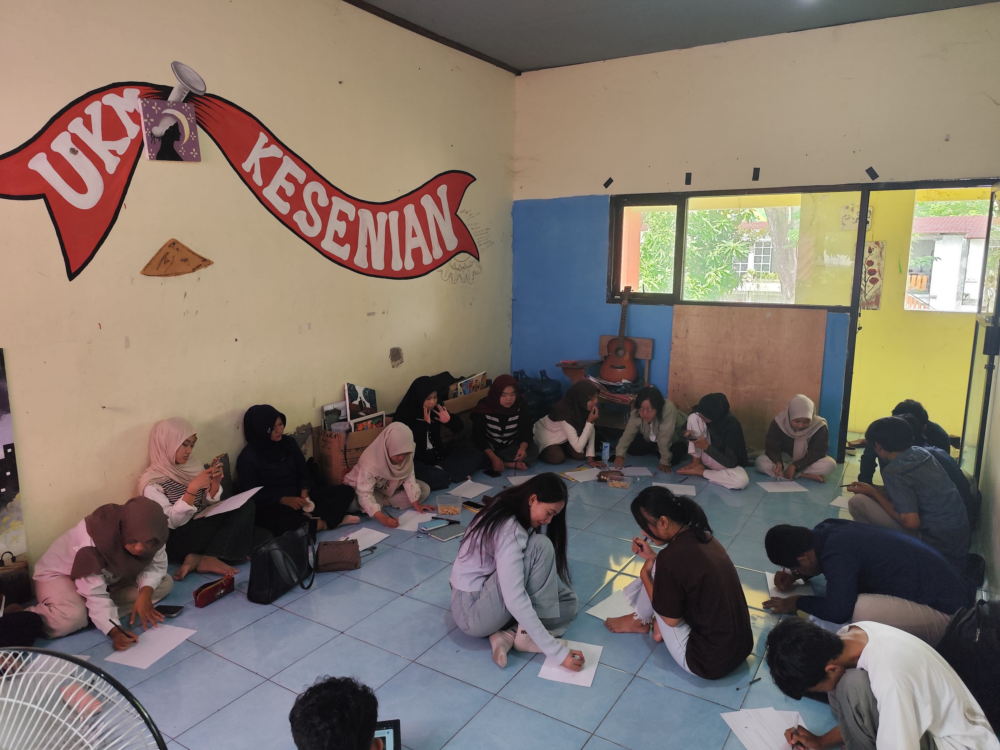
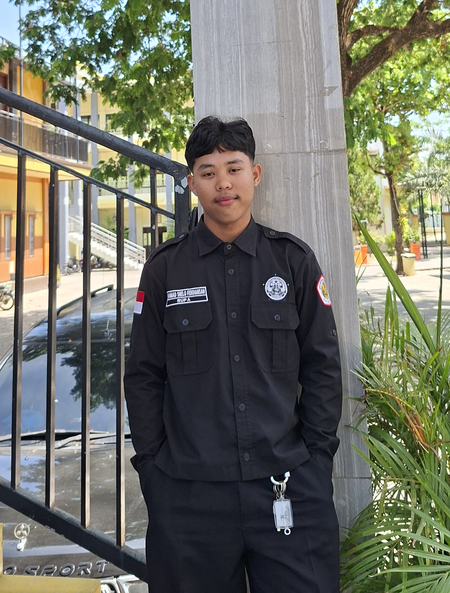
Ketua Divisi
GEN IX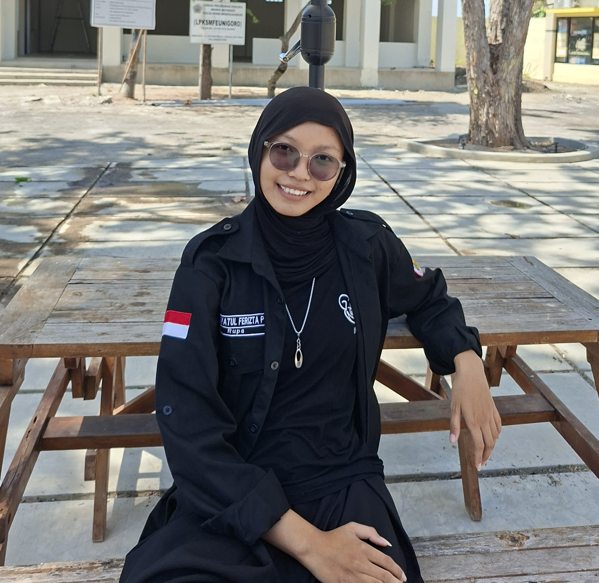
Wakil Ketua
GEN X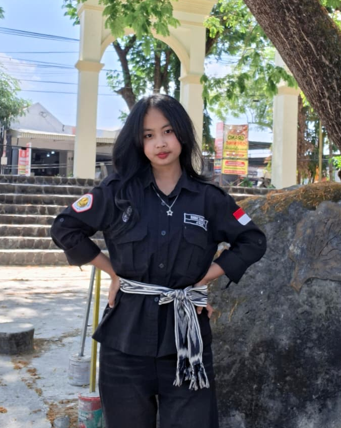
Sekretaris I
GEN IX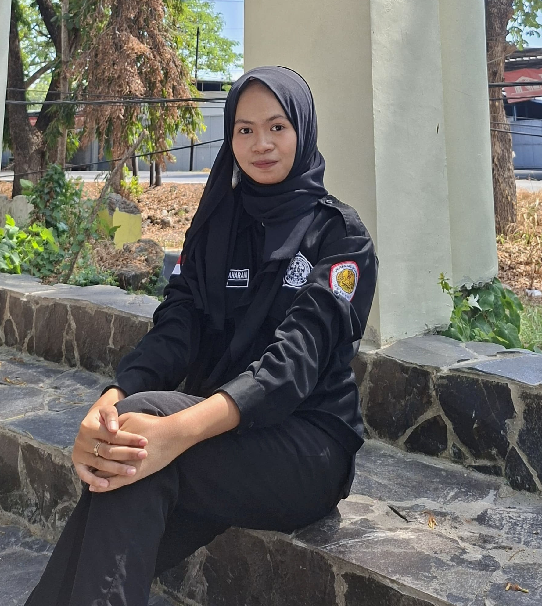
Sekretaris II
GEN X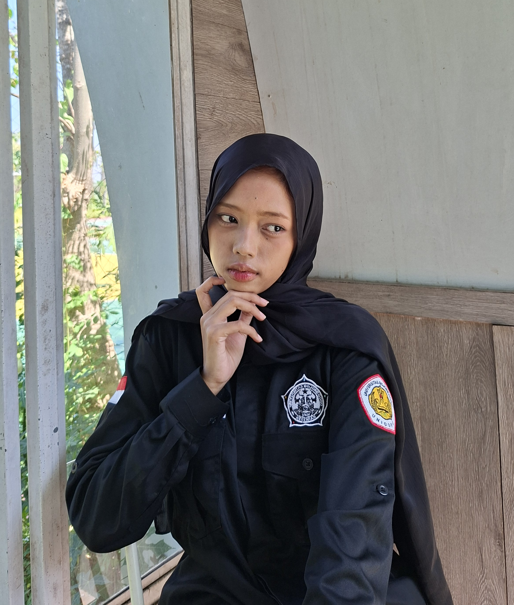
Bendahara
GEN X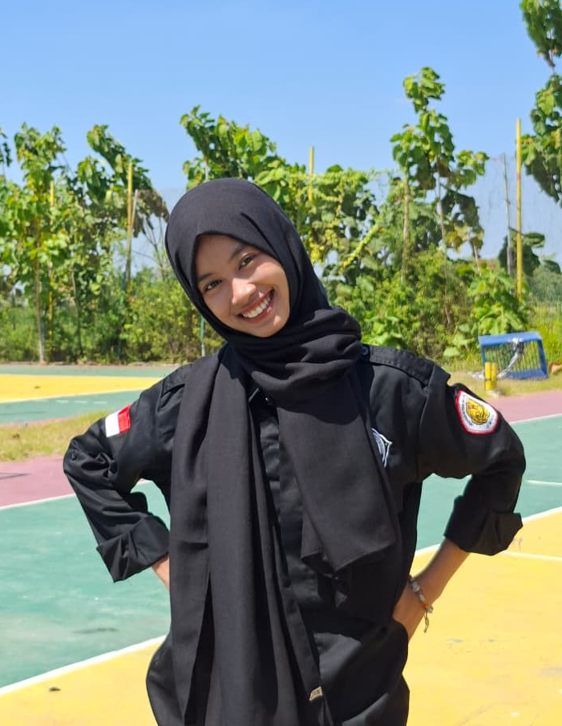
Kominfo
GEN X